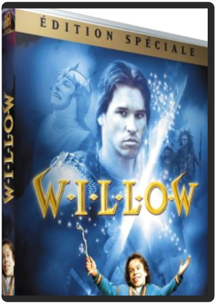

willowron howard  Un magnifique royaume gouverné par une méchante reine tyrannique et sans états d'âme, peuplé de créatures légendaires et mythiques (nains, trolls, lutins, elfes…) où croyances et sorcellerie sont monnaie courante ; un preux et viril guerrier (Val Kilmer), solitaire et sans attaches, dont la seule faiblesse reste son irréversible attirance pour la gent féminine ; un héros hors du commun (Warwick Davis) dont la grandeur d'âme est inversement proportionnelle à sa petite taille, chargé d'une quête féerique dont dépend la survie de tout un peuple… Tels sont les ingrédients de Willow, merveilleux conte fantastique écrit et produit par George Lucas en personne, et réalisé par Ron Howard dont on reconnaît aisément l'imagination débordante et l'originalité au travers d'un scénario dynamique et empreint d'humour, d'espièglerie, d'aventures et de rebondissements en tout genre. Au détour de quelques sermons bien américains – "écoute ton cur", "aie confiance en toi et affirme ta différence", "ne laisse pas les autres te marcher dessus"… – ce chef-d'uvre d'Heroïc Fantasy est un pur enchantement qui envoûtera les jeunes pousses et ravira leurs aînés adeptes du genre. Même s'il paraît flagrant que Willow ne peut soutenir la comparaison avec la magie ou les effets spéciaux ultra-modernes et sophistiqués d'un Seigneur des Anneaux ou d'un Harry Potter, le divertissement est au rendez-vous et l'alchimie fonctionne : on est sous le charme de cette magnifique fable. —Frédéric Thorens |

 Made with Delicious Library
Made with Delicious LibraryNancy, State zipflap congrotus delicious library Thomas, Julien